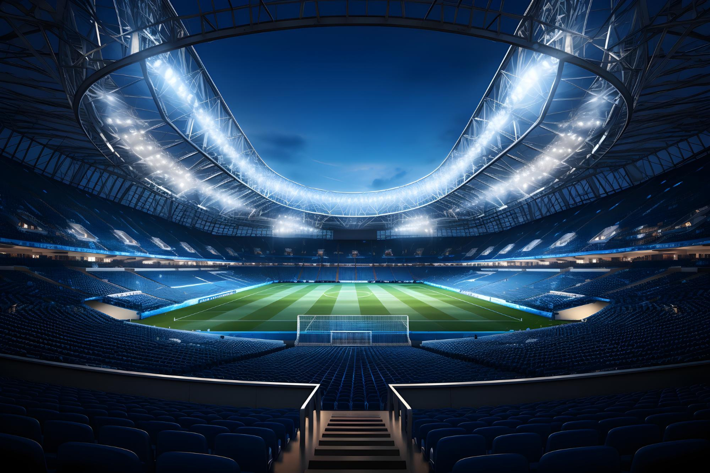

About us
contact us
An Article about Different Kinds Of Pictures
In this article, i am going to be talking about different kinds of pictures, which may include some nature pictures, sports, animes, movies etc. Like and subcribe to our channel to keep getting more updates.Below are are the top 5:
No.1. The sport image

This is a football stadium where all the actions happens, two teams play against eachother to come out victotrious.Fans from all over the world come to watch their favorite teams battle.
No.2. The cinema
.jpeg)
The cinema is a public place of entertainment, where any movie that have been produced is dispayed, upon which a people buy tickets to come and watch the movie of their choice. The cinema is a place where bunch of people share the joy of watching a film together and experiencing the same excitment and fun , together with their family and friends.
No.3. The Game Image
.jpeg)
Being a gamer is like experiencing whole different kinds of lives through multiple games, it could be action, adventure,sports role playing that gives you a taste of what that life could be. To be a gamer meams you gotta have a gaming station where you feel at suites you and compartable with the kind of gaming equipment you are working with.
No.4. Nature Image
.jpeg)
Nature which is a divine blessing from God,bestowed upon man as a gift. Yet some people do not seem to feel anything towards it and lack of care and concern for wildlives, so they cut down trees,destroy lands and sea of these wildlives ,killing the earth bits by bits. Nature is something that should be treasured and cared for and not just few peope but a larger community to help both the planet and ourselves.
No.5. Anime Image
.jpeg)
To most people this is seen as a cartoon which is useless, rather it`s not, anime is somethingthat fils a certain vid in the body, it teaches you what no one would teach you about life itself, what people are need to know to help better of their lives and show them a whole completely of humanity.
@ Copyright 2024----Netnaija Blogs